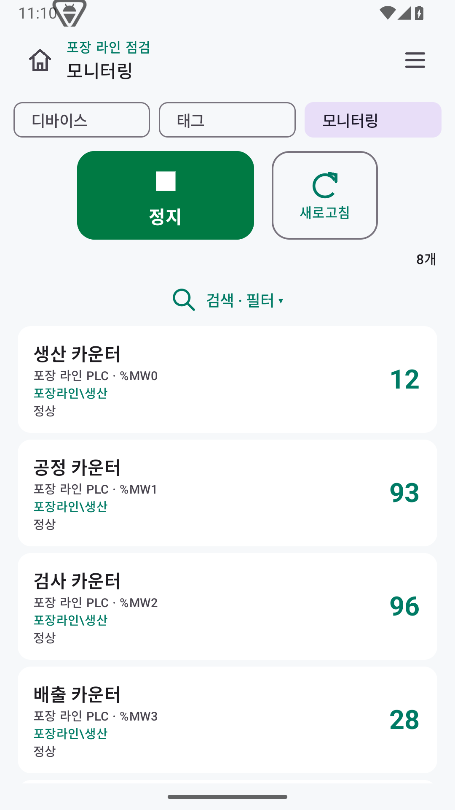
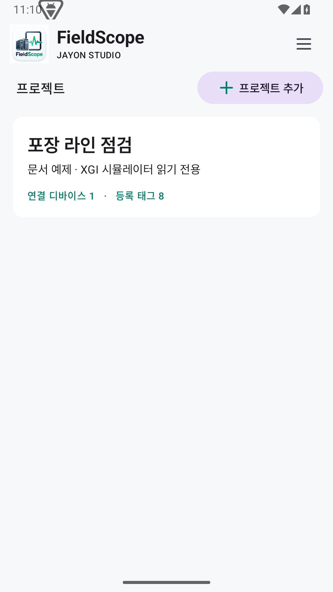
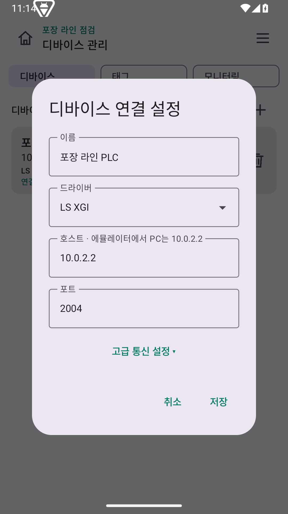
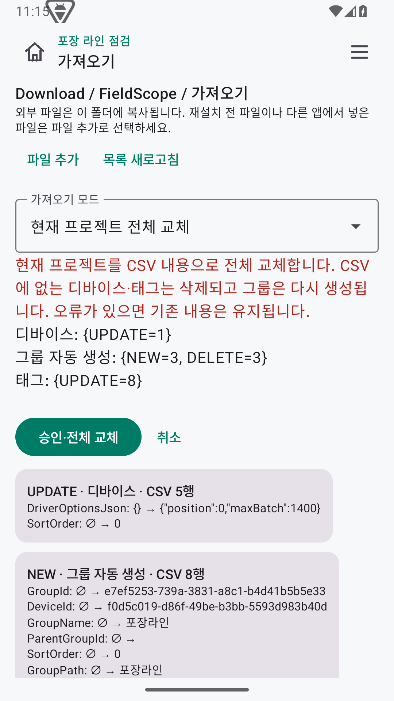

프로젝트와 디바이스
설비별 프로젝트 안에 PLC 디바이스를 등록합니다. 드라이버·IP·포트와 타임아웃·재접속 옵션을 화면에서 설정합니다.
ANDROID / MOBILE PLC MONITORING
현장에서 태그 값을 확인하고,
프로젝트를 CSV로 관리하세요.
Android 기기에서 PLC에 직접 연결합니다.
설비별 프로젝트를 열고 현재 값과 품질을 확인하며,
태그 검색과 통신 설정을 현장에서 관리합니다.
Android 10 이상 · Version 1.5.2 · PLC에 연결 가능한 네트워크 필요

FROM CONNECTION TO INSPECTION
설비별 프로젝트 안에 PLC 디바이스를 등록합니다. 드라이버·IP·포트와 타임아웃·재접속 옵션을 화면에서 설정합니다.
이름·주소·그룹 경로로 태그를 찾고 값과 품질을 확인합니다. 수집을 시작·정지하거나, 정지 상태에서 한 번 읽을 수 있습니다.
프로젝트를 CSV 한 파일로 내보내고 Excel에서 편집합니다. 가져오기 전 변경 내용을 확인하고 검증 후 프로젝트 전체를 교체합니다.
CSV에 없는 디바이스·태그는 전체 교체 시 삭제됩니다. 형식 오류나 라이선스 한도 초과 시 교체를 적용하지 않습니다.
SUPPORTED ETHERNET DRIVERS
| 드라이버 | 기본 포트 | 주소 예시 / 지원 범위 |
|---|---|---|
| MELSEC Q MC 3E | 5000 | D0 · M0 · X0 · Y0 / 3E Binary |
| LS XGI | 2004 | %MX0 · %MW0 · %MD0 / M 메모리 영역 |
| Modbus TCP | 502 | C:0 · DI:0 · HR:0 · IR:0 / 비트·레지스터 |
BOOL, 16·32비트 정수, FLOAT32를 지원합니다. PLC의 통신 설정과 주소 범위를 확인하세요. CPU USB 직접 통신과 STRING은 소개서 1.5.1 기준 지원하지 않습니다.
PRODUCT TOUR

설비별 이름과 설명, 디바이스·태그 수를 확인합니다.

드라이버와 IP·포트, 고급 통신 설정을 관리합니다.

변경 내용을 확인한 뒤 프로젝트 전체 교체를 적용합니다.
LICENSE OPTIONS
디바이스 1개 · 태그 10개
읽기 전용으로 연결을 확인합니다.
전체 프로젝트 합산 5,000개 태그
태그 읽기·쓰기를 지원합니다.
전체 프로젝트 합산 50,000개 태그
태그 읽기·쓰기를 지원합니다.
쓰기에는 태그 권한과 사용자 확인이 필요합니다. 허용 태그 수는 갱신 속도 보장 수치가 아닙니다. 기기별 요청 파일로 라이선스를 발급받아 등록하고 앱을 재시작하면 적용됩니다.
DOWNLOAD & DOCUMENTATION
PLC IP·포트와 지원 주소를 확인하고 읽기 전용으로 시험한 뒤 프로젝트를 백업하세요.
제품 소개와 문서는 제공된 1.5.1 자료 기준이며, 설치 파일은 최신 1.5.2입니다. Android 기기에 APK를 설치하며 JSolution Windows 통합 설치 패키지와 별도로 제공합니다.